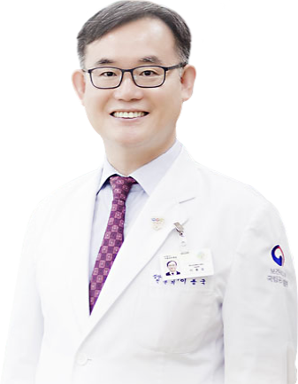

안녕하십니까?
국립부곡병원 홈페이지를 찾아주신 여러분들을
기쁘게 환영합니다.

우리 병원은 전국 5개 국립정신병원의 하나로 중부권(대전.세종,충청남북도)의 정신건강을 책임지고 있는 국가기관입니다. 현재 우리 병원은 정신의료기관의 고유 기능인 마음의 병을 앓는 분들을 치료하는 것 뿐 아니라, 과거와는 다른 많은 일들을 수행하고 있습니다. 점점 증가되고 있는 사회적 요구에 따라 정신과적 응급대응, 재난 및 트라우마에 대한 심리지원, 자살예방, 중독관리, 어린이부터 노인에 이르기까지 생애주기별, 대상자별 정신건강관리 등 해야 할 일들이 참 많습니다. 최근에는 코로나19 감염병 대응까지 하고 있지요.
이러한 과제들을 잘 수행하기 위해 병원장인 저를 비롯하여 170여명의 직원들은 일치단결하여 가장 적합하고 효과적인 치료와 서비스를 제공하는데 최선의 노력을 다하고 있습니다. 우리들만의 힘으로는 어렵다는 것을 알고 있기에 공공과 민간영역의 유관 기관들과도 적극적으로 연대하고 협력해 나갈 것입니다. 병원이 세상끝의 집이 아니라, 누구나 편안하게 찾아와 도움을 받고 사회로 복귀하며 세상과 소통하고, 세상속에서 함께 하는 집이 되도록 하겠습니다.
[국가정책수행을 통한 국민 정신건강 실현]이라고 하는
우리 병원의 사명을
다할 수 있도록 많은 분들의 관심과 협조를 부탁드립니다.
감사합니다.
2020.7.13. 취임 첫날
국립공주병원장 이종국
국민과 함께 하는 국립공주병원!